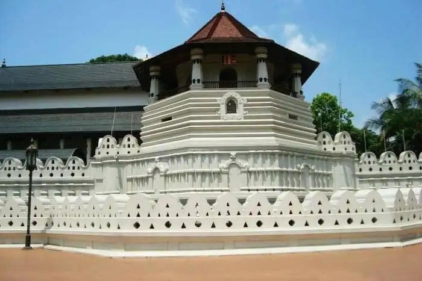

Sigiriya
Sigiriya was designated as a world heritage site in 1982. Sigiriya is famous for it's palace ruins on top of a massive 200 meter high rock surrounded by the remains of an extensive network of gardens, reservoirs and other structures.

Temple of the Tooth
The Temple of the Sacred Tooth Relic is one of the best things to see in Kandy, Sri Lanka. Called Sri Dalada Maligawa in Sinhalese, this incredible temple is right in the heart of the city of Kandy. This former capital of Sri Lanka is listed as a UNESCO World Heritage Site.
Anuradhapura
Anuradhapura, a Ceylonese political and religious capital that flourished for 1,300 years, was abandoned after an invasion in 993. Hidden away in dense jungle for many years, the splendid site, with its palaces, monasteries and monuments, is now accessible once again.
yala National park
Yala was designated as a wildlife sanctuary in 1900, along with Wilpattu, designated in 1938, as the first two designated national parks in Sri Lanka. The park is best known for its variety of wildlife and is important conservation of Sri Lankan elephants, Sri Lankan leopards and aquatic birds.